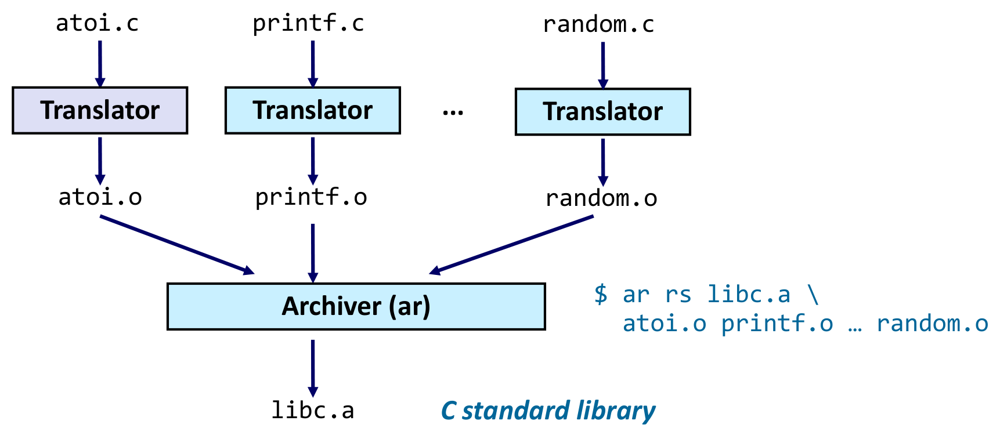
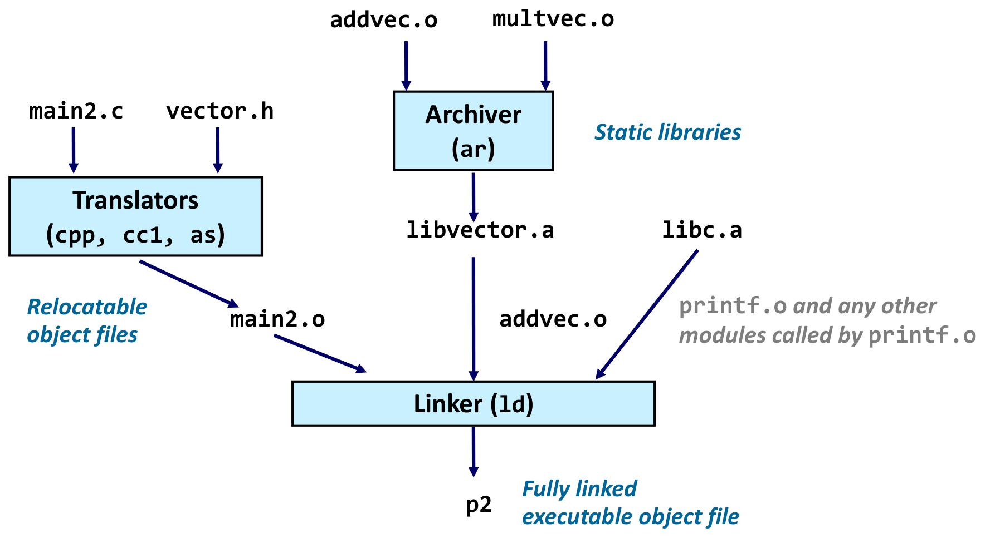
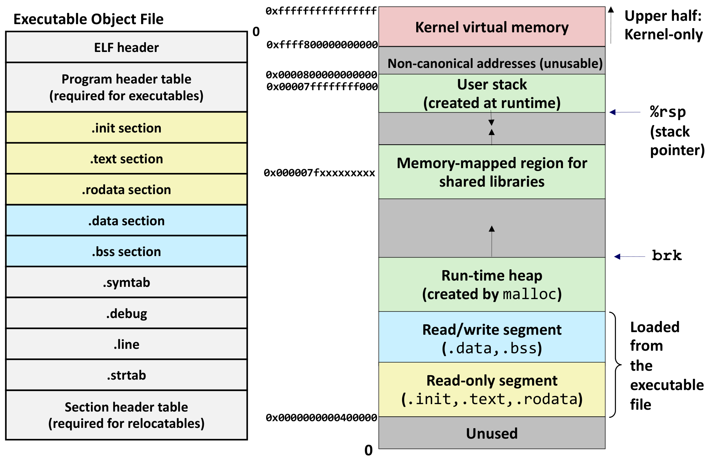
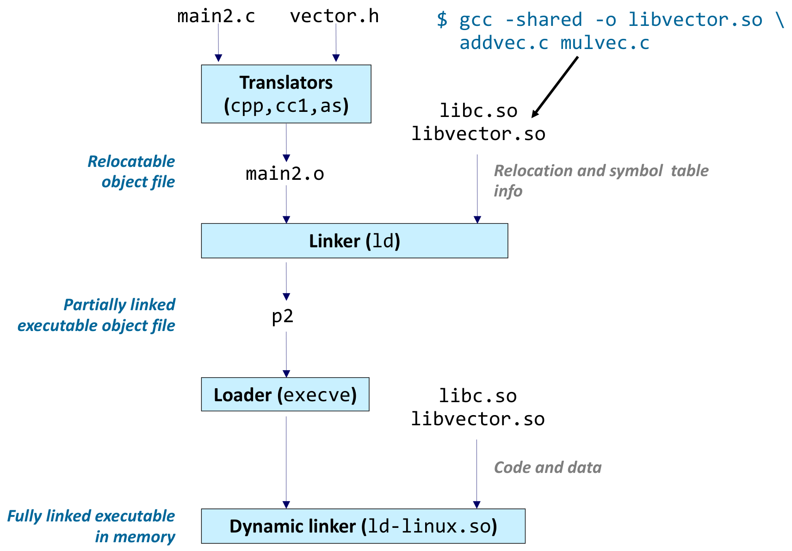
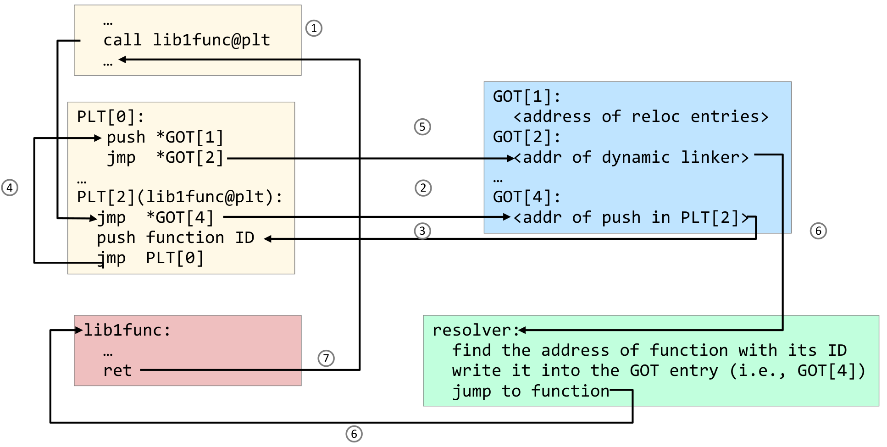
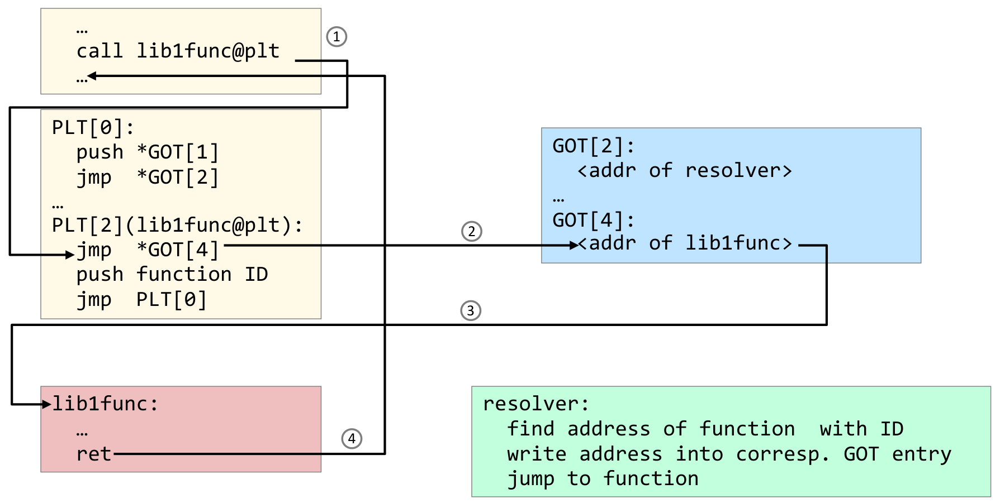
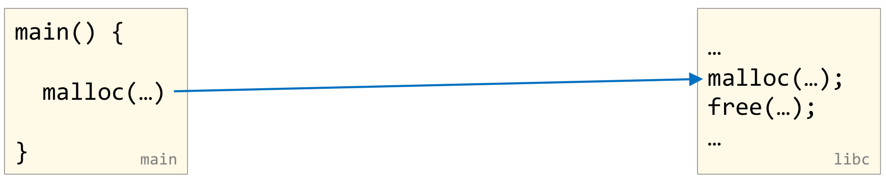
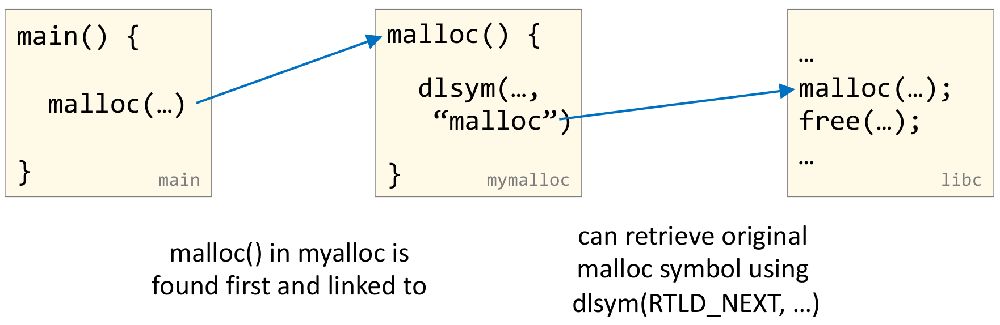

본 포스트는 서울대학교 컴퓨터공학부 시스템 프로그래밍(System Programming, M1522.000800, Fall 2026) 강의 자료 중 12강 — The Runtime Environment: Libraries (총 42장)를 바탕으로, 강의를 처음 듣는 독자도 논리적 흐름을 따라갈 수 있도록 재구성한 것입니다. 이 강의는 런타임 환경(The Runtime Environment) 단원의 Part III이며, 단원 전체는 Part I Life Cycle of a Program, Overview → Part II Symbol Resolution and Relocation → Part III Libraries로 이어집니다. 원본 슬라이드는 영문으로 작성되어 있고, 본문의 대섹션 구분은 강의 첫머리의 개요 슬라이드(Static and Dynamic Libraries → Dynamic Linking → Position-Independent Code → Library Interpositioning → Overview)를 따르되, 개요의 마지막 항목은 실제 슬라이드 제목대로 요약(Summary)으로 옮겼습니다. 다이어그램과 예제의 상당수는 이 과목의 교재인 Bryant & O’Hallaron, Computer Systems: A Programmer’s Perspective (3rd ed.) 7장의 후반부(7.6.2절 정적 라이브러리 ~ 7.13절 라이브러리 끼워넣기)에 대응합니다. 슬라이드 코드에서 생략 기호(…)로 줄인 부분은 C 코드 안에서는 주석
/* … */으로 옮겼습니다.
한 줄 요약 (TL;DR)
“라이브러리를 언제 붙이느냐 — 링크할 때, 로드할 때, 실행 도중 — 가 실행 파일의 크기, 갱신 비용, 메모리 공유, 그리고 호출을 가로챌 수 있는지까지 결정합니다.”
자주 쓰는 함수를 묶는 가장 단순한 방법은 목적 파일들을 인덱스와 함께 이어 붙인 정적 라이브러리(static library,
.a)입니다. 링커는 명령행을 왼쪽부터 훑으며 미해결 참조를 해결하는 멤버만 실행 파일에 복사하므로, 라이브러리를 명령행 끝에 두어야 합니다. 그러나 정적 링크는 모든 실행 파일과 모든 프로세스에 같은 코드를 중복시키고, 라이브러리의 작은 수정에도 재링크를 요구합니다. 공유 라이브러리(shared library,.so)는 링크를 로드 시점(동적 링커ld-linux.so)이나 실행 시점(dlopen/dlsym)으로 미루어 이 문제를 풉니다. 어디에 놓일지 모르는 코드를 여러 프로세스가 함께 쓰려면 코드가 PC-상대 오프셋만 써야 하고(위치 독립 코드, PIC), 다른 모듈의 함수처럼 거리를 미리 알 수 없는 대상은 데이터 영역의 GOT에 주소를 두고 코드 영역의 PLT가 그것을 거쳐 점프하게 하여, 첫 호출 때만 동적 링커가 GOT를 채우는 지연 링킹(lazy linking)을 합니다. 마지막으로 같은 링킹 장치를 역이용하면 소스를 고치지 않고도malloc같은 함수 호출을 가로챌 수 있는데, 이 라이브러리 끼워넣기(library interpositioning)를 컴파일 시점(매크로), 링크 시점(--wrap), 로드/실행 시점(LD_PRELOAD와dlsym(RTLD_NEXT, …)) 세 가지로 구현해 봅니다.
1. 정적 라이브러리와 동적 라이브러리 (Static and Dynamic Libraries)
지난 강의까지 링커가 목적 파일들을 엮는 과정을 따라갔습니다. 그런데 실제 프로그램은 printf, malloc, sqrt처럼 남이 이미 만들어 둔 함수를 대량으로 가져다 씁니다. 이 함수들을 어떤 형태로 배포하고, 링커가 그것을 어떻게 골라 붙이는지가 이 장의 질문입니다.
1.1 자주 쓰는 함수를 묶는 방법 (Packaging Commonly Used Functions)
수학, 입출력, 메모리 관리, 문자열 처리처럼 프로그래머가 공통으로 쓰는 함수를 어떻게 포장해서 제공할까요? 슬라이드는 먼저 일부러 허술한 두 가지 안(strawman)을 세웁니다.
| 안 | 방법 | 결과 | 문제 |
|---|---|---|---|
| 옵션 1 | 모든 함수를 하나의 소스 파일에 넣는다 | 프로그래머는 커다란 목적 파일 하나를 자기 프로그램에 링크한다 | 공간과 시간 모두 비효율적이다 |
| 옵션 2 | 함수마다 별도의 소스 파일을 둔다 | 프로그래머가 필요한 바이너리를 직접 골라 링크한다 | 효율적이지만 프로그래머의 부담이 크다 |
- 옵션 1의 비효율: 프로그램이
printf하나만 써도 수천 개 함수의 코드가 전부 실행 파일에 복사되고, 그 실행 파일을 실행하면 메모리에도 전부 올라갑니다(공간). 또 함수 하나만 고쳐도 거대한 소스 파일 전체를 다시 컴파일해야 합니다(시간). - 옵션 2의 부담: 필요한 함수만 링크할 수는 있지만,
printf가 내부적으로 무엇을 더 호출하는지까지 추적해 수백 개의.o중 필요한 것을 명령행에 일일이 나열하는 일은 사람이 할 일이 아닙니다.
두 안의 장점만 취하는 방법이 다음 절의 정적 라이브러리입니다.
1.2 해법: 정적 라이브러리 (Solution: Static Libraries)
정적 라이브러리(static library)는 관련된 재배치 가능 목적 파일(relocatable object file)들을 인덱스(index)와 함께 하나의 파일로 이어 붙인 것입니다. 이 파일을 아카이브(archive)라고 부르며, 확장자 .a가 여기서 나왔습니다.
정적 라이브러리가 작동하려면 링커 쪽도 바뀌어야 합니다.
- 링커를 확장합니다. 링커는 미해결 외부 참조(unresolved external reference)를 만나면, 그 심볼을 하나 이상의 아카이브에서 찾아 해결하려고 시도합니다.
- 아카이브 멤버 파일(archive member file)이 참조를 해결하면, 그 멤버만 실행 파일에 링크합니다. 아카이브 전체가 아니라 필요한
.o만 복사되는 것입니다.
결과적으로 프로그래머는 옵션 1처럼 파일 이름 하나(libc.a)만 적으면 되고, 실행 파일에는 옵션 2처럼 필요한 함수만 들어갑니다. 복사의 최소 단위가 멤버 목적 파일 하나라는 점을 기억해 두십시오. 1.3·1.4절에서 보듯 libc가 함수 하나당 .o 하나에 가깝게 잘게 쪼개져 있는 것도 이 때문입니다.
1.3 정적 라이브러리 만들기 (Creating Static Libraries)

libc.a가 만들어지는 과정입니다. 맨 위의 atoi.c, printf.c, …, random.c는 함수 하나하나를 담은 소스 파일이고, 각각이 Translator(전처리기·컴파일러·어셈블러를 묶어 부르는 이름) 상자를 따로 거쳐 atoi.o, printf.o, random.o 같은 재배치 가능 목적 파일이 됩니다. 가운데의 “…”는 이런 소스가 수천 개 더 있다는 뜻입니다. 세 갈래의 화살표가 모이는 Archiver (ar) 상자가 이 목적 파일들을 하나로 묶고, 그 결과가 맨 아래의 libc.a이며 오른쪽 파란 기울임 글씨가 그것이 C standard library임을 밝힙니다. Archiver (ar) 상자 오른쪽의 파란 명령 ar rs libc.a atoi.o printf.o … random.o가 이 그림을 실제로 수행하는 명령입니다. 이 그림이 보여 주는 핵심은 번역은 파일마다 따로, 묶기는 마지막에 한 번 이루어진다는 것이며, 그래서 함수 하나를 고치면 그 파일만 다시 번역해 아카이브 안의 멤버 하나만 바꿔 끼우면 됩니다.$ ar rs libc.a \
atoi.o printf.o … random.oar은 아카이브를 만들고 관리하는 도구(archiver)입니다.r은 목적 파일을 아카이브에 넣되 같은 이름의 멤버가 있으면 교체(replace)하라는 뜻이고,s는 아카이브에 심볼 인덱스를 기록하라는 뜻입니다. 1.2절 정의의 “인덱스”가 바로 이것으로, 링커는 이 인덱스 덕분에 “printf를 정의한 멤버는printf.o”라는 사실을 아카이브 전체를 뒤지지 않고도 알 수 있습니다.- 아카이버는 점진적 갱신(incremental update)을 허용합니다. 함수 하나가 바뀌면 그 함수만 다시 컴파일하고, 아카이브 안의 해당
.o파일만 교체하면 됩니다. 옵션 1의 “시간 비효율”이 이렇게 해결됩니다.
1.4 자주 쓰이는 라이브러리 (Commonly Used Libraries)
리눅스에서 가장 기본이 되는 두 정적 라이브러리의 규모는 다음과 같습니다(glibc 2.35 기준).
| 라이브러리 | 크기 · 멤버 수 | 담고 있는 기능 |
|---|---|---|
libc.a (C 표준 라이브러리) |
6 MB, 목적 파일 2055개 | 입출력, 메모리 할당, 시그널 처리, 문자열 처리, 날짜와 시간, 난수, 정수 연산 |
libm.a (C 수학 라이브러리) |
2.5 MB, 목적 파일 795개 | 부동소수점 수학 (sin, cos, tan, log, exp, sqrt, …) |
ar -t(아카이브의 멤버 목록, table of contents)로 실제 구성을 볼 수 있습니다.
% ar -t /usr/lib/libc.a | sort
…
fork.o
…
fprintf.o
fpu_control.o
fputc.o
freopen.o
fscanf.o
fseek.o
…% ar -t /usr/lib/libm.a | sort
…
e_acos.o
e_acosf.o
e_acosh.o
e_acoshf.o
e_acoshl.o
e_acosl.o
e_asin.o
e_asinf.o
…fork.o,fprintf.o,fputc.o처럼 함수 이름이 곧 멤버 이름입니다. 1.2절에서 말한 대로 복사 단위가 멤버 하나이므로, 잘게 쪼개 둘수록 실행 파일에 딸려 들어가는 군더더기가 줄어듭니다.libm.a에는 같은 함수가 자료형별로 따로 있습니다. 접미사 없는acos가double용,f가 붙은acosf가float용,l이 붙은acosl이long double용이라는 C 표준 수학 함수의 이름 규칙이 멤버 이름에도 그대로 드러납니다.
1.5 정적 라이브러리와 링크하기 (Linking with Static Libraries)
이제 우리가 직접 만든 라이브러리를 링크해 봅니다. 예제는 벡터 덧셈 addvec과 벡터 곱셈 multvec 두 함수를 담은 libvector.a입니다.

main2.c와 헤더 vector.h가 Translators (cpp, cc1, as) — 각각 전처리기, C 컴파일러 본체, 어셈블러 — 를 거쳐 재배치 가능 목적 파일 main2.o가 됩니다(왼쪽 파란 글씨 “Relocatable object files”). 가운데 갈래에서는 addvec.o와 multvec.o가 Archiver (ar)로 묶여 정적 라이브러리 libvector.a가 되고, 오른쪽의 libc.a도 같은 종류의 정적 라이브러리입니다(파란 글씨 “Static libraries”). 세 갈래가 모두 Linker (ld)로 들어가는데, 화살표 옆에 적힌 이름이 실제로 링커에 넘어가는 내용입니다 — libvector.a에서는 아카이브 전체가 아니라 addvec.o 하나만, libc.a에서는 회색 글씨대로 printf.o와 printf.o가 호출하는 다른 모듈들만 내려옵니다. multvec.o는 main2.o가 참조하지 않으므로 링크되지 않습니다. 맨 아래 p2는 그렇게 만들어진 완전히 링크된 실행 목적 파일(Fully linked executable object file)입니다. 이 그림은 1.2절의 “참조를 해결하는 멤버만 링크한다”는 규칙이 실제로 어떤 결과를 낳는지를 보여 줍니다.- 링커는 아카이브에서 필요한 멤버만 꺼냅니다.
main2.o가addvec은 호출하고multvec은 호출하지 않으므로,libvector.a에서는addvec.o만 복사됩니다. - 꺼낸 멤버가 다시 다른 멤버를 부를 수 있습니다.
printf.o는 내부적으로 다른 libc 함수들을 호출하므로, 링커는 그 모듈들까지 연쇄적으로 끌어옵니다. 옵션 2에서 프로그래머가 손으로 해야 했던 추적을 링커가 대신하는 셈입니다. p2는 필요한 코드가 모두 복사되어 들어간 실행 파일이므로, 실행할 때 라이브러리 파일이 더 이상 필요 없습니다. 참고로 gcc는 기본적으로 libc의 공유 버전을 쓰므로, 이 그림처럼libc.a까지 정적으로 넣으려면-static옵션을 붙여야 합니다.- 이 그림에서는 곱셈 함수가
multvec으로 적혀 있지만, 2.2절 이후의 그림과 예제 코드에서는mulvec으로 표기됩니다. 같은 역할의 함수입니다.
1.6 정적 라이브러리 사용하기 (Using Static Libraries)
링커가 아카이브를 다루는 방식은 단순한 알고리즘으로 정리됩니다.
- 명령행에 나열된 순서대로
.o파일과.a파일을 훑습니다(scan). - 훑는 동안 현재 미해결 참조의 목록을 유지합니다.
- 새
.o나.a파일을 만날 때마다, 목록의 미해결 참조를 그 파일의 목적 파일들이 정의한 심볼과 대조해 해결을 시도합니다. - 훑기가 끝났을 때 목록에 항목이 남아 있으면 오류입니다.
여기서 3단계의 비대칭이 중요합니다. .o 파일은 무조건 링크되지만, .a의 멤버는 그 순간 목록에 있는 미해결 참조를 해결할 때만 링크되고, 해결할 것이 없으면 그 아카이브는 그대로 지나칩니다. 링커는 이미 지나간 아카이브로 되돌아가지 않습니다.
그래서 명령행 순서가 중요합니다. 슬라이드의 예에서 libtest.o는 libfun을 호출하는 프로그램이고, libfun은 libmine.a 안에 정의되어 있습니다. -L.은 라이브러리를 찾을 디렉토리에 현재 디렉토리(.)를 추가하라는 뜻이고, -lmine은 libmine이라는 라이브러리를 찾으라는 줄임 표기로, 여기서는 정적 라이브러리 libmine.a를 가리킵니다.
$ gcc -L. libtest.o -lmine
$ gcc -L. -lmine libtest.o
libtest.o: In function `main':
libtest.o(.text+0x4): undefined reference to `libfun'두 명령을 알고리즘대로 따라가 보면 차이가 분명해집니다.
| 명령 | ① 첫 번째 입력 | ② 두 번째 입력 | 끝났을 때 |
|---|---|---|---|
gcc -L. libtest.o -lmine |
libtest.o 링크 → 미해결 목록에 libfun 추가 |
libmine.a의 멤버가 libfun을 해결 → 그 멤버 링크 |
목록이 비어 성공 |
gcc -L. -lmine libtest.o |
libmine.a: 목록에 libfun이 아직 없으므로 아무 멤버도 꺼내지 않고 지나감 |
libtest.o 링크 → 미해결 목록에 libfun 추가 |
libfun이 남아 오류 |
- 두 번째 명령의 오류 메시지
libtest.o(.text+0x4)는libtest.o의.text섹션 0x4 위치에libfun을 가리키는 빈자리, 즉 지난 강의의 재배치 항목이 해결되지 못한 채 남았다는 뜻입니다. - 교훈: 라이브러리는 명령행의 끝에 둡니다. 라이브러리끼리 서로를 참조할 때도 같은 규칙이 적용되어, 다른 라이브러리를 참조하는 라이브러리를 앞에 두어야 합니다.
1.7 실행 목적 파일의 로드 (Loading Executable Object Files)
정적 링크로 완성된 실행 파일은 이제 메모리에 올라가 실행될 차례입니다. 슬라이드는 ELF 실행 파일의 구성과 그것이 놓이는 프로세스 가상 주소 공간을 나란히 보여 줍니다.

.init · .text · .rodata, 하늘색의 데이터 섹션 .data · .bss, 회색의 .symtab · .debug · .line · .strtab, 그리고 재배치 가능 파일에 필수인 Section header table로 이루어집니다. 색이 대응 관계를 알려 줍니다 — 노란 섹션들은 오른쪽의 노란 읽기 전용 세그먼트(Read-only segment)로, 하늘색 섹션들은 하늘색 읽기/쓰기 세그먼트(Read/write segment)로 올라가며, 오른쪽 중괄호 “Loaded from the executable file”이 이 두 세그먼트만이 파일에서 온 것임을 밝힙니다. 회색 섹션들은 링커와 디버거를 위한 정보라 메모리에 올라가지 않습니다. 그 위의 연두색 영역들은 실행 중에 만들어집니다 — malloc이 키우는 런타임 힙(Run-time heap)은 위쪽 화살표 방향으로 자라며 그 끝을 brk가 가리키고, 맨 위 사용자 스택(User stack)은 아래쪽으로 자라며 그 끝을 %rsp(스택 포인터)가 가리킵니다. 둘 사이의 공유 라이브러리를 위한 메모리 매핑 영역(Memory-mapped region for shared libraries)이 이 강의 후반부의 무대입니다. 두 그림 사이의 주소 눈금은 읽기 전용 세그먼트가 0x400000에서 시작하고(그 아래 주소 0부터 0x400000 직전까지는 회색의 사용하지 않는 영역(Unused)입니다), 사용자 스택이 0x00007ffffffff000 아래에 놓이며, 0x0000800000000000부터 0xffff800000000000 직전까지는 사용할 수 없는 비정규 주소(Non-canonical addresses)이고, 그 위 절반(Upper half)은 커널 전용 가상 메모리(Kernel virtual memory)라는 것을 보여 줍니다. 공유 라이브러리 영역 옆의 주소 0x000007fxxxxxxxxx는 자릿수를 세어 보면 0이 하나 더 붙어 있는데, 64비트 리눅스에서 공유 라이브러리는 보통 스택 바로 아래의 0x00007f…로 시작하는 주소에 놓입니다.실행 파일의 구성
- 두 개의 헤더 테이블. 프로그램 헤더 테이블(program header table)은 파일의 어느 부분을 메모리의 어디에 어떤 권한으로 올릴지, 즉 세그먼트(segment)를 기술하며 실행 파일에 필수입니다. 섹션 헤더 테이블(section header table)은 각 섹션(section)의 위치와 크기를 기술하며, 링커가 섹션 단위로 일하는 재배치 가능 파일에 필수입니다.
.init은 프로그램 초기화 때 호출되는 작은 함수를 담고,.text는 기계어,.rodata는 문자열 상수처럼 읽기만 하는 데이터입니다..data는 초기값이 있는 전역 변수,.bss는 0이거나 초기값이 없는 전역 변수입니다. 지난 강의에서 본 대로.bss는 파일에서 공간을 차지하지 않습니다..symtab(심볼 테이블),.debug(디버깅 정보),.line(소스 줄 번호와 기계어의 대응),.strtab(심볼 이름 등의 문자열 테이블)은 링커와 디버거만 씁니다.
주소 공간에 놓이는 방식
- 로더(loader)는 프로그램 헤더 테이블을 보고 읽기 전용 세그먼트(
.init,.text,.rodata)와 읽기/쓰기 세그먼트(.data,.bss)를 메모리에 올립니다. 섹션 여러 개가 권한이 같은 세그먼트 하나로 묶인다는 점이 링커의 시각(섹션)과 로더의 시각(세그먼트)의 차이입니다. - 힙은
.bss위에서 시작해brk를 올리며 위로, 스택은 0x00007ffffffff000 아래에서 시작해%rsp를 내리며 아래로 자랍니다. 둘이 마주 보며 자라는 사이 공간에 공유 라이브러리가 매핑됩니다. - x86-64는 64비트 주소 중 하위 48비트만 실제로 쓰고, 상위 비트들이 47번 비트와 같아야 하는 정규(canonical) 주소만 허용합니다. 그래서 0x00007fffffffffff 다음부터 0xffff7fffffffffff까지는 쓸 수 없는 틈이 되고, 주소 공간이 사용자용 아래 절반과 커널용 위 절반으로 갈립니다.
- 0x400000이라는 시작 주소는 “실행 파일을 이 주소에 놓는다”고 링크할 때 정해 둔 값입니다. 이 사실은 3.2절에서 위치 독립 코드와 대비되며 다시 등장합니다.
2. 동적 링킹 (Dynamic Linking)
공유 라이브러리를 쓰면 링커가 하던 일 중 일부가 실행 파일이 만들어진 뒤로 미루어집니다. 이 장은 그 미뤄진 일을 누가, 언제, 어떻게 하는지를 다룹니다.
2.1 로드할 때마다 하는 링크 (Dynamic Linking)
- 공유 라이브러리는 그것을 사용하는 프로세스가 생성될 때에야 로드됩니다.
- 따라서 공유 라이브러리의 가상 주소는 고정되어 있지 않습니다. 같은
libc.so라도 프로세스마다, 실행할 때마다 다른 주소에 놓일 수 있습니다. - 그 결과 링크 작업의 일부는 링크 시점(한 번만 하는 작업)에 할 수 없고, 로드 시점(프로그램이 시작될 때마다)에 해야 합니다.
- 따라서 공유 라이브러리의 가상 주소는 고정되어 있지 않습니다. 같은
- 동적 링커
- 로더가 호출합니다.
- 로드 시점에 공유 라이브러리에 대한 참조를 재배치합니다. 지난 강의에서 정적 링커가 하던 재배치를, 라이브러리의 실제 주소가 정해진 뒤에 동적 링커가 하는 것입니다.
| 정적 링크 | 동적 링크 | |
|---|---|---|
| 라이브러리 코드의 위치 | 실행 파일 안에 복사됨 | 실행 파일 밖의 .so 파일 |
| 라이브러리 주소가 정해지는 때 | 링크할 때 | 프로세스가 생성될 때 |
| 링크 비용을 치르는 때 | 빌드할 때 한 번 | 프로그램을 시작할 때마다 |
| 링크하는 주체 | 링커 ld |
링커 ld(일부) + 동적 링커 ld-linux.so(나머지) |
2.2 로드 시점의 동적 링킹 (Dynamic Linking at Load-time)

main2.c, vector.h)를 공유 라이브러리로 바꾼 것입니다. 오른쪽 위 파란 명령 gcc -shared -o libvector.so addvec.c mulvec.c가 공유 라이브러리 libvector.so를 만들고, 검은 화살표가 그 결과물을 가리킵니다. 위에서부터 보면, main2.c와 vector.h가 Translators (cpp, cc1, as)를 거쳐 재배치 가능 목적 파일 main2.o가 되고, 이것이 Linker (ld)로 들어갑니다. 이때 오른쪽의 libc.so와 libvector.so에서 링커로 내려가는 화살표에는 회색 글씨로 “Relocation and symbol table info”라고 적혀 있습니다 — 링커가 라이브러리에서 가져가는 것은 코드가 아니라 재배치 정보와 심볼 테이블 정보뿐이라는 뜻입니다. 그 결과인 p2는 왼쪽 파란 글씨대로 부분적으로 링크된 실행 목적 파일(Partially linked executable object file)입니다. 실행할 때 p2는 Loader (execve)를 거쳐 Dynamic linker (ld-linux.so)로 넘어가고, 이번에는 libc.so와 libvector.so에서 “Code and data”, 즉 실제 코드와 데이터가 내려옵니다. 맨 아래 왼쪽의 “Fully linked executable in memory”가 결론으로, 완전히 링크된 실행 파일은 디스크 위에는 존재하지 않고 메모리 안에서만 완성됩니다. 같은 라이브러리 이름이 그림에 두 번 나오는 것은, 같은 파일이 링크 시점과 로드 시점에 서로 다른 용도로 두 번 쓰인다는 것을 강조하기 위함입니다.그림을 단계별로 따라가 보겠습니다.
- 공유 라이브러리 만들기.
gcc -shared는 목적 파일 대신 공유 라이브러리를 만들라는 옵션입니다.addvec.c와mulvec.c를 번역해libvector.so하나로 묶습니다. - 링크 시점 — 반쯤만 링크합니다. 링커는
main2.o의addvec참조가libvector.so에서 해결될 수 있는지 심볼 테이블로 확인만 하고, 코드는 복사하지 않습니다. 대신 실행 파일에 “이 프로그램은libvector.so와libc.so가 필요하다”는 정보와, 로드 후에 채워야 할 재배치 정보를 남깁니다. 그래서p2는 부분적으로 링크된 실행 파일입니다. - 로드 시점 — 나머지를 링크합니다. 로더(
execve)가p2를 메모리에 올리면서,p2에 동적 링커의 경로(.interp섹션)가 기록되어 있음을 보고 프로그램 대신 동적 링커를 먼저 실행합니다. 동적 링커는 필요한 공유 라이브러리의 코드와 데이터를 메모리 매핑 영역에 올리고,p2의 참조들을 라이브러리의 실제 주소로 재배치한 뒤, 제어를 프로그램에 넘깁니다.
2.3 로드 시점 동적 링킹 — 전체 예제 (Dynamic Linking at Load-time – Full Example)
공유 라이브러리
라이브러리는 두 함수와 헤더 하나로 이루어집니다.
void addvec(int *dst, int *src1, int *src2, int N)
{
for (int i=0; i<N; i++) dst[i] = src1[i] + src2[i]; // 원소별 덧셈
}void mulvec(int *dst, int *src1, int *src2, int N)
{
for (int i=0; i<N; i++) dst[i] = src1[i] * src2[i]; // 원소별 곱셈
}// add N elements of vectors ‘src1’ and ‘src2’ and
// place result in ‘dst’.
void addvec(int *dst, int *src1, int *src2, int N);
// multiply N elements of vectors ‘src1’ and ‘src2’
// and place result in ‘dst’.
void mulvec(int *dst, int *src1, int *src2, int N);위에서부터 addvec.c, mulvec.c, vector.h입니다. 공유 라이브러리는 한 줄로 만듭니다.
$ gcc -shared -o libvector.so addvec.c mulvec.c-fPIC가 없습니다
공유 라이브러리의 코드는 3장에서 볼 위치 독립 코드(PIC)로 컴파일하는 것이 원칙이며, 그 옵션이 -fPIC입니다. addvec과 mulvec은 전역 변수도 다른 함수도 참조하지 않아 이 명령으로도 문제없이 만들어지지만, 일반적인 라이브러리 소스라면 -fPIC를 붙여야 합니다. 4.7절에서 mymalloc.so를 만들 때는 슬라이드도 -shared -fPIC를 함께 씁니다.
라이브러리를 쓰는 응용 프로그램
#include <stdio.h>
#include <stdlib.h>
#include "vector.h"
void initvec(int *v, int N) { /* … */ }
void printvec(char *label, int *v, int N) { /* … */ }
int main(int argc, char *argv[]) {
int N = argc > 2 ? atoi(argv[1]) : 0;
if (N <= 0) N = 16;
int *a = malloc(N * sizeof(int));
int *b = malloc(N * sizeof(int));
int *c = malloc(N * sizeof(int));
if (!a || !b || !c) { /* … */ }
initvec(a, N); initvec(b, N);
printvec("a", a, N);
printvec("b", b, N);
addvec(c, a, b, N); // libvector.so의 함수
printvec("a+b", c, N);
mulvec(c, a, b, N); // libvector.so의 함수
printvec("a*b", c, N);
free(a); free(b); free(c);
return EXIT_SUCCESS;
}vectormath.c는 벡터 두 개를 초기화해 출력한 뒤, 라이브러리 함수로 원소별 합과 곱을 구해 출력합니다. 컴파일하고 실행하면 다음과 같습니다.
$ gcc -Wall -g -o vectormath vectormath.c -L. -lvector
$ LD_LIBRARY_PATH=.:$LD_LIBRARY_PATH ./vectormath
a: 7 6 9 3 1 15 10 12 9 13 …
b: 12 2 4 8 11 8 7 13 6 10 …
a+b: 19 8 13 11 12 23 17 25 15 23 …
a*b: 84 12 36 24 11 120 70 156 54 130 …- 라이브러리의 파일 이름이 아니라 이름만 지정합니다.
-llibvector.so가 아니라-lvector입니다. 링커는-l<이름>을 보고 탐색 디렉토리마다lib<이름>.so를, 그 디렉토리에 없으면lib<이름>.a를 찾습니다. LD_LIBRARY_PATH는 시스템에 라이브러리를 어디서 찾을지 알려 주는 환경 변수입니다.- 보통 현재 디렉토리
.은 이 경로에 포함되어 있지 않으므로, 위 명령처럼 실행할 때만 일시적으로 시스템 경로 앞에 추가합니다. - 현재 셸에 대해 영구적으로 바꿔 둘 수도 있습니다. 그러면
vectormath를 바로 실행할 수 있습니다.
$ export LD_LIBRARY_PATH=.:$LD_LIBRARY_PATH
$ ./vectormath
a: 7 6 9 3 1 15 10 12 9 13 …
b: 12 2 4 8 11 8 7 13 6 10 …
a+b: 19 8 13 11 12 23 17 25 15 23 …
a*b: 84 12 36 24 11 120 70 156 54 130 …출력을 검산하면 a+b의 첫 열은 \(7 + 12 = 19\), a*b의 첫 열은 \(7 \times 12 = 84\)이고, 보이는 10개 열 모두 같은 방식으로 맞습니다. …는 슬라이드가 생략한 나머지 원소입니다. 덧붙여 main의 첫 줄 조건은 argc > 2라서, 인자를 하나만 주면(argc == 2) 그 값은 무시되고 기본값 \(N = 16\)이 쓰입니다. 인자 하나로 크기를 정하려는 의도라면 argc > 1이 맞을 것입니다.
2.2절 그림에서 같은 libvector.so가 두 번 쓰였던 것과 정확히 대응합니다.
| 시점 | 찾는 주체 | 필요한 것 | 경로를 알려 주는 방법 |
|---|---|---|---|
| 링크 시점 | 링커 ld |
심볼 테이블·재배치 정보 | -L. |
| 로드 시점 | 동적 링커 ld-linux.so |
코드와 데이터 | LD_LIBRARY_PATH=. |
-L.은 링커에게만 전해지는 탐색 경로이고 실행 파일에 기록되지 않습니다. 그래서 링크가 성공했더라도 LD_LIBRARY_PATH 없이 ./vectormath를 실행하면, 동적 링커는 기본 경로에서 libvector.so를 찾지 못해 실행을 시작하지 못합니다.
2.5 실행 시점 동적 링킹 — 전체 예제 (Dynamic Linking at Run-Time – Full Example)
2.3절의 vectormath.c를 실행 시점 링킹으로 바꾼 것이 vectormathrt.c입니다. 슬라이드가 붉게 강조한 줄이 새로 들어간 부분입니다.
#include <dlfcn.h>// load shared library아래:handle선언,dlopen호출,if (!handle)검사// obtain addresses of library functions아래: 함수 포인터 선언 두 줄,dlsym호출 두 줄,if (!addvec || !mulvec)검사
굵게 표시된 addvec(c, a, b, N);과 mulvec(c, a, b, N);은 2.3절과 모양은 같지만 이제 함수 포인터를 통한 호출입니다.
/* … */
#include <dlfcn.h> // dlopen, dlsym, dlerror
int main(int argc, char *argv[]) {
//
// load shared library
//
void *handle;
handle = dlopen("./libvector.so", RTLD_LAZY);
if (!handle) { /* … */ }
//
// obtain addresses of library functions
//
void (*addvec)(int*,int*,int*,int);
void (*mulvec)(int*,int*,int*,int);
addvec = dlsym(handle, "addvec");
mulvec = dlsym(handle, "mulvec");
if (!addvec || !mulvec) { /* … */ }
int N = argc > 2 ? atoi(argv[1]) : 0;
/* … */
addvec(c, a, b, N); // 함수 포인터를 통한 호출
/* … */
mulvec(c, a, b, N); // 함수 포인터를 통한 호출
/* … */
return EXIT_SUCCESS;
}$ gcc -Wall -g -o vectormathrt vectormathrt.c -ldl
$ LD_LIBRARY_PATH=.:$LD_LIBRARY_PATH ./vectormathrt
a: 7 6 9 3 1 15 10 12 9 13 …
b: 12 2 4 8 11 8 7 13 6 10 …
a+b: 19 8 13 11 12 23 17 25 15 23 …
a*b: 84 12 36 24 11 120 70 156 54 130 …- 링크할 때 우리 공유 라이브러리를 제공할 필요가 없습니다. 컴파일 명령에
-L. -lvector가 사라졌습니다. 링커는addvec이라는 이름을 아예 보지 못합니다 — 프로그램 안에서 그것은 심볼이 아니라dlsym에 넘기는 문자열일 뿐이기 때문입니다. - 대신 실행 시점 동적 링킹을 위한 시스템 라이브러리
libdl.so를-ldl로 포함합니다.dlopen,dlsym같은 함수가 여기에 들어 있습니다. - 결과는 로드 시점 링킹과 똑같습니다. 같은 라이브러리를 언제, 누가 붙이느냐만 다릅니다.
dlopen에 슬래시가 든 경로를 주면 그 경로를 그대로 씁니다."./libvector.so"처럼/가 들어 있으면 동적 링커는 탐색 경로를 뒤지지 않고 그 파일을 직접 엽니다. 따라서 이 예제의 실행 명령에서LD_LIBRARY_PATH=.는libvector.so를 찾는 데 쓰이지 않습니다. 탐색 경로가 쓰이는 것은dlopen("libvector.so", …)처럼 이름만 줄 때입니다.- glibc 2.34부터는
dlopen계열 함수가 libc 본체에 통합되었습니다. 1.4절이 기준으로 삼은 glibc 2.35 같은 최신 환경에서는-ldl없이도 링크되며, 하위 호환을 위해libdl이 빈 껍데기로 남아 있어-ldl을 붙여도 무해합니다.
3. 위치 독립 코드 (Position-Independent Code)
2장의 동적 링커는 “공유 라이브러리에 대한 참조를 로드 시점에 재배치한다”고 했습니다. 그런데 라이브러리 코드 안의 주소를 로드할 때마다 고쳐 쓴다면 두 가지가 깨집니다. 코드가 프로세스마다 다르게 고쳐지니 1.8절의 “여러 프로세스가 코드 한 벌을 공유한다”가 불가능해지고, 고쳐 쓸 곳이 많을수록 프로그램 시작이 느려집니다. 이 장은 코드를 한 바이트도 고치지 않고 어느 주소에나 놓을 수 있게 하는 방법을 다룹니다.
3.1 위치 독립 코드란 (Position Independent Code)
위치 독립 코드(position-independent code, PIC)는 객체(변수와 코드)에 접근할 때 상대 오프셋(relative offset)만 사용하는 기법입니다. 이렇게 하면 코드가 최종적으로 놓일 메모리 위치와 무관해집니다.
- 공유 라이브러리를 사용 가능한 아무 메모리 주소에나 로드할 수 있습니다.
- PIC는 다시 링크할 필요가 없습니다. 다른 주소에 놓여도 코드 안에는 고쳐 쓸 바이트가 없기 때문입니다(로드할 때 정해지는 주소는 3.3절의 GOT 같은 데이터 영역에 모입니다).
- 당연히, 객체를 가리킬 때 절대 주소를 쓸 수 없습니다. 절대 주소는 놓이는 위치가 바뀌면 틀린 값이 되기 때문입니다.
PIC가 쓸모 있는 곳은 다음과 같습니다.
- 공유 라이브러리 — 현대 운영체제는 대부분의 경우에 공유 라이브러리를 씁니다.
- 주소 공간 배치 무작위화(Address Space Layout Randomization, ASLR) — 실행할 때마다 코드와 라이브러리를 무작위 주소에 놓으려면 코드가 어디에 놓여도 돌아가야 합니다.
- 보안 — ASLR 덕분에 공격자가 특정 함수나 데이터의 주소를 미리 알 수 없게 됩니다.
- 실행 시점 동적 로딩 — 2.4절의
dlopen으로 올리는 라이브러리는 그때 비어 있는 아무 곳에나 놓여야 합니다.
3.2 PC-상대 오프셋만 쓰는 코드 (PIC uses only PC-relative offsets)
PIC는 PC-상대 오프셋만 씁니다. 지난 강의에서 본 %rip 기준 주소 지정이 바로 그 도구입니다.
int global;
int main(int argc,
char *argv[])
{
global = 7;
return 0;
}Disassembly of section .text:
...
00001125 <main>:
1125: movl $0x7,0x2ee5(%rip) # 4014
112f: mov $0x0,%eax
1134: ret
Disassembly of section .bss:
...
00004014 <global>:
4014: 00 00global = 7은 movl $0x7,0x2ee5(%rip)이 되었습니다. 이 명령은 global의 주소(0x4014)를 어디에도 적지 않고, “다음 명령에서 0x2ee5바이트 떨어진 곳”이라고만 적습니다.
오프셋 검산
이 movl은 연산 코드와 주소 지정 방식을 나타내는 2바이트(c7 05), 변위(displacement) 4바이트, 즉값 7을 담은 4바이트로 이루어진 10바이트 명령입니다. 0x1125에서 시작하므로 다음 명령은 \(\mathtt{0x1125} + 10 = \mathtt{0x112f}\)이고, 실제로 역어셈블 결과의 다음 줄이 112f입니다. 지난 강의에서 본 대로 명령을 실행하는 시점의 %rip는 다음 명령을 가리키므로,
\[ \mathrm{EA} = \mathtt{\%rip} + \mathtt{0x2ee5} = \mathtt{0x112f} + \mathtt{0x2ee5} = \mathtt{0x4014} \]
로 정확히 global에 도달합니다. 지난 강의의 재배치 공식으로 거꾸로 계산해도 같습니다. 변위 필드의 위치가 \(P = \mathtt{0x1127}\), 대상 global의 주소가 \(S = \mathtt{0x4014}\)이고, 그 뒤로 변위 4바이트와 즉값 4바이트가 이어지므로 addend는 \(A = -8\)이며, 변위 필드에 기록되는 값 \(v\)는
\[ v = S + A - P = \mathtt{0x4014} - 8 - \mathtt{0x1127} = \mathtt{0x2ee5} \]
입니다.
왜 위치 독립인가
이제 이 프로그램 전체가 임의의 기준 주소 \(B\)만큼 밀려 로드되었다고 합시다. main의 다음 명령은 \(B + \mathtt{0x112f}\), global은 \(B + \mathtt{0x4014}\)에 놓이고, 명령이 계산하는 주소는
\[ (B + \mathtt{0x112f}) + \mathtt{0x2ee5} = B + \mathtt{0x4014} \]
입니다. \(B\)가 무엇이든 같은 바이트(0x2ee5)가 올바른 주소를 가리킵니다. 이것이 PIC의 정의를 기계어 수준에서 확인한 것입니다.
- 이 역어셈블의 주소가 1.7절의 0x400000이 아니라 0x1125처럼 0 근처에서 시작하는 데 주목하십시오. 이 실행 파일은 그 자체가 위치 독립 코드로 링크된 위치 독립 실행 파일(position-independent executable, PIE)이어서, 0을 기준으로 링크해 두고 실제로는 로드할 때 정해지는 기준 주소 \(B\)에 놓입니다. 요즘 많은 리눅스 배포판의 gcc가 이 방식을 기본으로 씁니다.
이 방법의 전제와 한계
- 코드와 데이터의 상대 위치가 일정할 때만 동작합니다!
- 이는 링커가 보장합니다.
.text,.rodata,.data,.bss섹션은 하나의 덩어리로 함께 옮겨지기 때문입니다. 지난 강의의 “객체들 사이의 상대 위치가 확정된다”는 성질이 여기서 결정적으로 쓰입니다.
- 이는 링커가 보장합니다.
- 공유 라이브러리 안에 있는 함수의 주소는 로드하기 전에는 알 수 없습니다.
- 실행 파일과
libc.so는 서로 다른 덩어리이고, 둘 사이의 거리는 프로세스가 생성될 때 정해집니다. 그러니printf를 부르는call에 PC-상대 오프셋을 미리 적어 둘 수 없습니다. - 그래서 동적 링킹이 필요합니다. 다음 절이 그 구체적인 방법입니다.
- 실행 파일과
3.4 지연 링킹: 첫 번째 호출 (Lazy linking: first invocation)
앞 그림은 GOT 칸이 이미 채워진 뒤의 모습이었습니다. 그렇다면 GOT 칸은 언제, 누가 채울까요? 프로그램 시작 시 모든 외부 함수를 한꺼번에 해석할 수도 있지만, 동적 링커는 함수가 처음 호출될 때 그 함수 하나만 해석하는 지연 링킹(lazy linking)도 할 수 있으며, 슬라이드가 보여 주는 것이 이 방식입니다.

lib1func를 처음 호출할 때의 흐름을 원 번호 ①–⑦ 순서로 보여 주는 그림입니다. 앞 그림과 비교해 두 가지가 다릅니다. 첫째, 노란 PLT 상자에 모든 PLT 항목이 함께 쓰는 0번 항목 PLT 0(push *GOT 1, jmp *GOT 2)이 추가되었습니다. 둘째, 하늘색 GOT 상자의 4번 칸에는 아직 lib1func의 주소가 아니라 <addr of push in PLT 2>, 즉 PLT 2번 항목의 두 번째 명령 주소가 들어 있고, 그 위의 1번 칸에는 <address of reloc entries>(재배치 항목들의 주소), 2번 칸에는 <addr of dynamic linker>(동적 링커의 주소)가 들어 있습니다. 흐름은 다음과 같습니다. ① call lib1func@plt로 PLT 2번 항목에 들어갑니다. ② jmp *GOT 4가 GOT 4번 칸을 읽는데, ③ 거기 적힌 주소가 바로 다음 명령이므로 결국 push function ID로 되돌아와 함수 번호를 스택에 넣습니다. ④ jmp PLT 0으로 왼쪽 고리를 따라 PLT 0번 항목으로 갑니다. ⑤ push *GOT 1로 재배치 항목들의 주소를 넣고 jmp *GOT 2로 GOT 2번 칸을 읽습니다. ⑥ 거기 적힌 주소를 따라 초록 상자의 resolver(동적 링커)로 들어가면, resolver가 함수 번호로 lib1func의 주소를 찾아 GOT 4번 칸에 기록(write it into the GOT entry)하고 아래쪽 고리를 따라 lib1func로 점프합니다(⑥이 두 번 적힌 것은 resolver로 들어가는 화살표와 빠져나오는 화살표가 같은 단계에 속하기 때문입니다). ⑦ lib1func의 ret이 원래 호출자의 call 다음 줄로 돌아옵니다. 이 그림의 요점은 첫 호출은 동적 링커를 거치는 먼 길을 돌지만, 그 길의 끝에서 GOT 4번 칸이 실제 주소로 바뀐다는 것입니다.| 단계 | 실행 위치 | 동작 |
|---|---|---|
| ① | 호출자 | call lib1func@plt — 복귀 주소를 스택에 넣고 PLT[2]로 갑니다 |
| ② | PLT[2] | jmp *GOT[4] — GOT[4]에 적힌 주소로 점프합니다 |
| ③ | PLT[2] | GOT[4]에는 처음에 PLT[2]의 push 명령 주소가 들어 있으므로 바로 다음 줄로 돌아와 push function ID로 함수 번호를 스택에 넣습니다 |
| ④ | PLT[2] → PLT[0] | jmp PLT[0] — 모든 함수가 공유하는 공통 진입점으로 갑니다 |
| ⑤ | PLT[0] | push *GOT[1]로 재배치 항목들의 주소를 넣고, jmp *GOT[2]로 GOT[2]에 적힌 동적 링커의 주소를 읽습니다 |
| ⑥ | 리졸버(resolver) | 그 주소의 리졸버로 들어가(첫 번째 ⑥) 스택의 함수 번호로 lib1func의 주소를 찾고, 그것을 GOT[4]에 기록한 뒤, lib1func로 점프합니다(두 번째 ⑥) |
| ⑦ | lib1func |
함수 본체를 실행하고 ret으로 원래 호출자에게 곧바로 돌아갑니다 |
- GOT[4]의 초기값이 핵심 장치입니다. 처음에 GOT[4]가 PLT[2] 안의 두 번째 명령(
push)을 가리키게 해 두었기 때문에, ②의 간접 점프 하나가 해석 전에는 “동적 링커로 가는 길”, 해석 후에는 “함수로 가는 지름길”이라는 두 역할을 합니다. - 리졸버가 받는 두 가지 정보. 스택에는 ③에서 넣은 함수 번호(이 함수의 재배치 항목이 몇 번째인지)와 ⑤에서 넣은 GOT[1]의 내용(재배치 정보가 어디 있는지)이 쌓여 있습니다. 리졸버는 이 둘로 “어느 모듈의 어느 함수를 해석해 어느 GOT 칸에 적어야 하는지”를 알아냅니다. 참고로 GOT의 앞 세 칸(GOT[0]~GOT[2])은 동적 링커용으로 예약되어 있어 함수별 칸은 GOT[3]부터 시작하고, PLT도 PLT[0]이 공통 진입점이라 함수별 항목은 PLT[1]부터 시작합니다. 그림에서 PLT[2]가 GOT[4]와 짝을 이루는 것은 이 때문입니다.
- ⑦에서 PLT를 거치지 않고 곧바로 돌아오는 이유. PLT와 리졸버는
call이 아니라jmp로만 이동하므로, 스택에 남은 복귀 주소는 ①의call이 넣은 것 하나뿐입니다(리졸버는 자신이 받은 두 값을 정리한 뒤 점프합니다). 그래서lib1func의ret은 마치 호출자가lib1func를 직접 부른 것처럼 동작합니다.
3.5 지연 링킹: 두 번째 이후의 호출 (Lazy linking: 2nd and further invocations)

<addr of lib1func>로 바뀌어 있습니다 — 첫 호출의 ⑥단계에서 리졸버가 기록한 값입니다(2번 칸은 이 그림에서 <addr of resolver>로 적혀 있는데, 앞 그림의 동적 링커 주소와 같은 것입니다). 그래서 흐름은 원 번호 네 단계로 짧아집니다. ① call lib1func@plt로 PLT 2번 항목에 들어가고, ② jmp *GOT 4가 GOT 4번 칸을 읽으면, ③ 이번에는 거기 적힌 lib1func의 주소로 곧장 점프하며, ④ ret으로 호출자에게 돌아옵니다. PLT 0번 항목과 초록 상자의 resolver는 그림에 그대로 남아 있지만 어떤 화살표도 지나가지 않습니다. 이 그림은 동적 링커의 비용이 함수당 첫 호출 한 번으로 끝나고, 그 뒤로는 간접 점프 하나의 비용만 남는다는 것을 보여 줍니다.| 단계 | 실행 위치 | 동작 |
|---|---|---|
| ① | 호출자 | call lib1func@plt |
| ② | PLT[2] | jmp *GOT[4] |
| ③ | → lib1func |
GOT[4]에 이제 lib1func의 주소가 있으므로 곧장 함수로 갑니다 |
| ④ | lib1func |
ret으로 호출자에게 돌아갑니다 |
두 번째 호출부터는 PLT[2]의 첫 명령 하나만 실행되고, push function ID 이후는 다시는 실행되지 않습니다. 직접 호출과 비교해 늘어난 비용은 GOT 칸을 읽는 메모리 접근 한 번과 간접 점프 한 번뿐입니다.
프로그램은 libc 같은 라이브러리에서 수많은 함수를 참조할 수 있지만, 한 번 실행하는 동안 실제로 호출되는 것은 그중 일부입니다. 시작할 때 모든 참조를 해석하면 쓰지도 않을 함수의 해석 비용까지 매번 치르게 되므로, 지연 링킹은 그 비용을 실제로 호출되는 함수에 대해서만, 첫 호출 때 한 번 치르도록 미룹니다. 2.4절의 dlopen(…, RTLD_LAZY)가 요청한 것도 이 동작입니다. 반대로 모든 해석을 시작 시점에 끝내고 싶다면 dlopen에는 RTLD_NOW를, 일반 실행에는 환경 변수 LD_BIND_NOW를 줄 수 있으며, 보안상의 이유로 실행 파일을 처음부터 이렇게 빌드하는 배포판도 있습니다.
4. 사례 연구: 라이브러리 끼워넣기 (Case Study: Library Interpositioning)
지금까지는 링커와 동적 링커가 올바른 정의를 찾아 주는 과정을 봤습니다. 이 장은 같은 장치를 뒤집어, 링커가 우리가 고른 다른 정의를 찾게 만드는 기법을 다룹니다. 장 표지 슬라이드는 결과부터 보여 줍니다.
$ LD_PRELOAD=./mymalloc.so ./hellor
malloc(10) = 0x501010
free(0x501010)
hello, world프로그램 hellor는 한 줄도 고치지 않았는데, 그 안의 malloc과 free 호출이 우리 코드를 거쳐 기록되었습니다. 어떻게 가능한지가 이 장의 내용입니다.
4.1 라이브러리 끼워넣기 (Library Interpositioning)
라이브러리 끼워넣기(library interpositioning)는 프로그래머가 임의의 함수에 대한 호출을 가로챌(intercept) 수 있게 해 주는 강력한 링킹 기법입니다.
끼워넣기는 프로그램의 일생 중 세 시점에서 일어날 수 있습니다.
| 시점 | 그때 일어나는 일 |
|---|---|
| 컴파일 시점 (compile time) | 소스 코드가 컴파일될 때 |
| 링크 시점 (link time) | 재배치 가능 목적 파일들이 정적으로 링크되어 실행 목적 파일이 될 때 |
| 로드/실행 시점 (load/run time) | 실행 목적 파일이 메모리에 로드되고, 동적으로 링크된 뒤, 실행될 때 |
4.2 끼워넣기의 응용 (Some Interpositioning Applications)
- 보안(Security)
- 격리(confinement), 즉 샌드박싱(sandboxing): libc 함수에 대한 호출을 가로채, 프로그램이 허용되지 않은 파일 접근이나 시스템 호출을 하지 못하게 막습니다.
- 보이지 않는 곳에서의 암호화(behind the scenes encryption): 원래는 암호화되지 않는 네트워크 연결을 자동으로 암호화합니다. 프로그램은 평소처럼 보내고 받을 뿐인데, 그 호출을 가로챈 쪽이 암호화를 덧붙이는 것입니다.
- 모니터링과 프로파일링(Monitoring and Profiling)
- 함수가 호출된 횟수를 셉니다.
- 함수가 어느 호출 위치(call site)에서 어떤 인자로 불리는지 분석합니다.
malloc추적(malloc tracing)- 메모리 누수(memory leak) 탐지 — 할당만 되고 해제되지 않은 블록을 찾습니다.
- 주소 추적(address trace) 생성 — 할당된 블록들의 주소와 크기의 시간순 기록을 만듭니다.
이 장의 예제는 마지막 항목인 malloc 추적입니다.
4.3 예제 프로그램 (Example Program)
#include <stdio.h>
#include <stdlib.h>
#include "malloc.h"
int main()
{
free(malloc(10)); // 7행: 10바이트를 할당하고 바로 해제
printf("hello, world\n");
return EXIT_SUCCESS;
}- 목표: 할당되고 해제되는 블록의 주소와 크기를,
hello.c의 소스를 수정하지 않고 추적합니다. - 세 가지 해법: 라이브러리의
malloc과free함수에 대해 컴파일 시점, 링크 시점, 로드/실행 시점에 각각 끼워넣기를 합니다.
4.4 끼워넣기 기법 (Interpositioning Techniques)
세 해법을 먼저 한눈에 비교하고, 다음 세 절에서 하나씩 구현합니다.
| 시점 | 방법 | 필요한 것 |
|---|---|---|
| 컴파일 시점 | malloc/free 호출이 매크로로 전개되어 mymalloc/myfree 호출로 바뀐다 |
소스 코드 |
| 링크 시점 | 링커의 트릭으로 링크 도중 함수 이름을 바꾼다: malloc → __wrap_malloc, __real_malloc → malloc |
(준비된) 재배치 가능 목적 파일 |
| 로드/실행 시점 | malloc/free의 사용자 정의 버전을 공유 라이브러리에 구현하고, 끼워넣기로 그 라이브러리에 호출을 연결한다 |
아무것도 필요 없다. 동적으로 링크된 어떤 바이너리에도 동작한다 |
아래로 갈수록 필요한 것이 줄어듭니다. 컴파일 시점 방법은 프로그램을 다시 컴파일해야 하고, 링크 시점 방법은 링크하기 전의 목적 파일이 있어야 하지만, 로드/실행 시점 방법은 이미 완성된 실행 파일에도 그대로 적용됩니다.
4.5 컴파일 시점 끼워넣기 (Compile-time Interpositioning)
C 전처리기를 이용합니다. 로컬 malloc.h 파일이 malloc(free)을 각각 래퍼(wrapper) mymalloc(myfree)으로 바꾸는 매크로를 정의합니다.
#ifdef COMPILETIME
// Compile-time interposition of malloc and free using C
// preprocessor. A local malloc.h file defines malloc (free)
// as wrappers mymalloc (myfree) respectively.
#include <stdlib.h>
#include <stdio.h>
//
// mymalloc - malloc wrapper function
//
void *mymalloc(size_t size, char *file, int line)
{
void *ptr = malloc(size); // 진짜 libc malloc
printf("%s:%d: malloc(%d)=%p\n", file, line, (int)size, ptr);
return ptr;
}
#endif#define malloc(size) mymalloc(size, __FILE__, __LINE__ )
#define free(ptr) myfree(ptr, __FILE__, __LINE__ )
void *mymalloc(size_t size, char *file, int line);
void myfree(void *ptr, char *file, int line);위가 mymalloc.c, 아래가 malloc.h입니다.
$ make helloc
gcc -Wall -DCOMPILETIME -c mymalloc.c
gcc -Wall -I. -o helloc hello.c mymalloc.o
$ make runc
./helloc
hello.c:7: malloc(10)=0x0x5555555592a
hello.c:7: free(0x5555555592a)
hello, world- 매크로가 호출을 바꿔 씁니다.
hello.c가malloc.h를 포함하면, 7행의free(malloc(10))은 전처리 단계에서myfree(mymalloc(10, "hello.c", 7), "hello.c", 7)이 됩니다.__FILE__과__LINE__은 매크로가 전개되는 자리의 파일 이름과 줄 번호로 바뀌는 미리 정의된 매크로이므로, 출력에hello.c:7이 찍힙니다. - 래퍼 안의
malloc은 진짜malloc입니다.mymalloc.c는 로컬malloc.h가 아니라 시스템의<stdlib.h>만 포함하므로, 그 안의malloc(size)은 매크로로 바뀌지 않고 libc의malloc을 부릅니다. 이렇게 해서 래퍼가 자기 자신을 부르는 무한 재귀를 피합니다. -DCOMPILETIME은 매크로COMPILETIME을 정의해#ifdef COMPILETIME블록을 활성화하고,-I.는 헤더를 찾을 경로에 현재 디렉토리를 추가합니다.- 슬라이드에는
mymalloc만 실려 있지만,malloc.h가 선언한myfree도 같은 방식으로free를 호출하고 한 줄을 출력하도록 정의되어 있어야 합니다. 출력의free(…)줄이 그 결과입니다. - 출력의
malloc(10)=0x0x5555555592a는 슬라이드의 오기로 보입니다.%p는 이미0x를 붙여 출력하므로0x가 두 번 찍힐 수 없고, 주소의 자릿수도 4.6·4.7절 출력의0x5555555592a0보다 하나 적습니다.
4.6 링크 시점 끼워넣기 (Link-time Interpositioning)
정적 링커 ld의 --wrap symbol 플래그를 이용합니다.
#ifdef LINKTIME
// Link-time interposition of malloc and free using
// the static linker's (ld) "--wrap symbol" flag.
#include <stdio.h>
void *__real_malloc(size_t size); // 링크 후에는 진짜 malloc을 가리킨다
void __real_free(void *ptr);
//
// __wrap_malloc - malloc wrapper function
//
void *__wrap_malloc(size_t size) // 링크 후에는 모든 malloc 호출이 여기로 온다
{
void *ptr = __real_malloc(size);
printf("malloc(%d) = %p\n", (int)size, ptr);
return ptr;
}
#endif이 코드도 4.5절과 같은 mymalloc.c 안의 #ifdef LINKTIME 블록으로, -DLINKTIME을 주어 컴파일할 때만 활성화됩니다. 4.7절의 #ifdef RUNTIME 블록과 -DRUNTIME도 마찬가지입니다.
$ make hellol
gcc -Wall -DLINKTIME -c mymalloc.c
gcc -Wall -Wl,--wrap,malloc -Wl,--wrap,free \
-o hellol hello.c mymalloc.o
$ make runl
./hellol
malloc(10) = 0x5555555592a0
free(0x5555555592a0)
hello, world-Wl플래그는 인자를 링커에 전달합니다.-Wl,뒤의 내용은 쉼표를 기준으로 나뉘어 각각 링커의 인자가 되므로,-Wl,--wrap,malloc은 링커에게--wrap malloc으로 전달됩니다.- 링커에게
--wrap,malloc을 주면 참조를 특별한 방식으로 해석합니다.
| 목적 파일 안의 참조 | 링커가 연결하는 정의 |
|---|---|
malloc |
__wrap_malloc (mymalloc.o의 래퍼) |
__real_malloc |
malloc (libc의 진짜 함수) |
- 지난 강의의 표현으로 말하면,
--wrap은 링커의 심볼 해석 단계에서 이름을 바꿔치기하는 것입니다.hello.o의call malloc은 컴파일된 그대로이지만, 그 재배치 항목이malloc대신__wrap_malloc의 주소로 채워집니다. - 바꿔치기는 이번에 링크하는 목적 파일들의 미해결 참조에만 적용됩니다. 그래서 이 방법에는 링크하기 전의 재배치 가능 목적 파일(여기서는 gcc가
hello.c를 번역해 만든 목적 파일)이 필요하고, 이미 링크가 끝난libc.so내부의malloc호출은 가로채지 못합니다. free에 대해서도 같은 방식의__wrap_free가 정의되어 있어야 하며, 출력의free(…)줄이 그 결과입니다.
슬라이드의 hello.c는 #include "malloc.h"처럼 따옴표 형식으로 헤더를 포함합니다. 따옴표 형식은 -I. 옵션이 없어도 그 소스 파일이 있는 디렉토리를 가장 먼저 찾습니다. 따라서 로컬 malloc.h와 hello.c가 같은 디렉토리에 있으면, 링크 시점 빌드(hellol)와 4.7절의 로드/실행 시점 빌드(hellor)에서도 hello.c의 malloc·free가 mymalloc·myfree로 바뀌어 버립니다. 그러면 hello.o에는 malloc 참조가 없으니 --wrap이 가로챌 것이 없고, mymalloc을 정의한 목적 파일도 없으니 링크가 실패합니다.
교재의 원래 예제는 #include <malloc.h>라는 꺾쇠 형식을 씁니다. 꺾쇠 형식은 평소에는 시스템의 malloc.h를 찾고, -I.를 줄 때만 현재 디렉토리의 malloc.h를 먼저 찾으므로, 컴파일 시점 끼워넣기를 켜는 스위치가 정확히 -I. 하나가 됩니다. 직접 실습할 때는 이 형식을 쓰거나 세 버전을 서로 다른 디렉토리에서 빌드하십시오.
4.7 로드/실행 시점 끼워넣기 (Load/Run-time Interpositioning)
동적 링커(ld-linux.so)의 LD_PRELOAD 메커니즘을 이용합니다.
#ifdef RUNTIME
// Run-time interposition of malloc and free based on
// dynamic linker's (ld-linux.so) LD_PRELOAD mechanism
#define _GNU_SOURCE
#include <stdio.h>
#include <stdlib.h>
#include <dlfcn.h>
void *malloc(size_t size) { // libc와 같은 이름으로 정의한다
static void *(*mallocp)(size_t size) = NULL; // 진짜 malloc의 주소를 기억해 둘 칸
char *error;
void *ptr;
// get address of original libc malloc
if (!mallocp) {
mallocp = dlsym(RTLD_NEXT, "malloc"); // 검색 순서상 "다음" malloc = libc의 것
if ((error = dlerror()) != NULL) {
fputs(error, stderr);
exit(EXIT_FAILURE);
}
}
ptr = mallocp(size);
printf("malloc(%d) = %p\n", (int)size, ptr);
return ptr;
}
#endif- 이번 래퍼의 이름은
malloc그 자체입니다. 컴파일 시점처럼 이름을 바꾸는 매크로도, 링크 시점처럼 이름을 바꿔치기하는 링커 옵션도 없습니다. libc와 같은 이름의 정의를 하나 더 만들고, 동적 링커가 그것을 먼저 찾게 하는 것이 전부입니다. dlsym(RTLD_NEXT, "malloc")은 “검색 순서상 이 라이브러리 다음에 나오는malloc”의 주소를 돌려줍니다. 우리 라이브러리 다음의malloc은 libc의 것이므로, 이것으로 진짜malloc을 부를 수 있습니다. 여기서 그냥malloc(size)을 부르면 자기 자신이 다시 불려 무한 재귀에 빠집니다.static함수 포인터mallocp는 첫 호출에서 찾은 주소를 기억해, 이후 호출부터는dlsym을 다시 부르지 않게 합니다. 3.4절의 지연 링킹과 같은 발상을 손으로 구현한 셈입니다.dlerror()로 오류를 확인합니다.RTLD_NEXT는 GNU 확장이라, 슬라이드처럼 모든#include보다 앞에(파일 첫 부분에)#define _GNU_SOURCE를 두어야 쓸 수 있습니다.<stdio.h>같은 다른 시스템 헤더를 먼저 포함한 뒤에 정의하면 효과가 없습니다.
$ make hellor
gcc -Wall -DRUNTIME -shared -fPIC -o mymalloc.so mymalloc.c -ldl
gcc -Wall -o hellor hello.c
$ make runr
(LD_PRELOAD="/usr/lib64/libdl.so ./mymalloc.so" ./hellor)
malloc(10) = 0x5555555592a0
free(0x5555555592a0)
hello, world- 래퍼는 위치 독립 코드로 된 공유 라이브러리(
-shared -fPIC)로 만들고,dlsym을 쓰므로-ldl을 링크합니다. hellor는 아무 특별한 옵션 없이 평범하게 빌드합니다. 4.4절 표의 “아무것도 필요 없다”가 바로 이것입니다.- 환경 변수
LD_PRELOAD는 동적 링커에게, 미해결 참조(예:malloc)를 해석할 때libdl.so와mymalloc.so를 먼저 찾아보라고 지시합니다. 여러 라이브러리를 공백으로 구분해 나열할 수 있습니다.libdl.so는dlopen계열 함수(여기서는dlsym,dlerror)에 대한 참조를 해석하는 데 필요합니다. 다만mymalloc.so를-ldl과 함께 링크했으므로libdl은 이미mymalloc.so의 의존 라이브러리로 기록되어 있고, 동적 링커는 미리 로드하는 라이브러리의 의존 라이브러리도 함께 로드합니다. 그래서 장 표지 슬라이드처럼LD_PRELOAD=./mymalloc.so만 주어도 됩니다(2.5절에서 말한 대로 glibc 2.34부터는 이 함수들이 아예 libc 안에 있습니다).
free에 대해서도 같은 구조의 래퍼가mymalloc.so에 함께 들어 있어야 하며, 출력의free(…)줄이 그 결과입니다.
4.8 어떻게 동작하는가 (How does it work?)
로드/실행 시점 끼워넣기가 가능한 이유는 심볼이 로드 시점에 해석되기 때문입니다. 동적 링커는 두 단계로 일합니다.
- 1단계: 실행 파일과 필요한 라이브러리들을 로드합니다.
- 2단계: 심볼을 해석합니다.
이 중 1단계에서 라이브러리를 어디서 찾고 무엇을 먼저 로드할지는 환경 변수 두 개가 정합니다.
LD_LIBRARY_PATH는 로더가 라이브러리를 어디서 찾을지를 알려 줍니다(2.3절).LD_PRELOAD는LD_LIBRARY_PATH보다 우선합니다.LD_PRELOAD에 적힌 라이브러리는 다른 어떤 라이브러리보다 먼저 로드되어, 2단계의 심볼 검색 순서에서도 실행 파일 바로 다음, 즉 libc를 비롯한 다른 모든 공유 라이브러리보다 앞에 섭니다.

LD_PRELOAD 없이 실행했을 때의 심볼 해석입니다. 왼쪽 상자는 실행 파일(오른쪽 아래 회색 글씨 main)의 main() 함수로, 그 안에 malloc(…) 호출이 있습니다. 오른쪽 상자는 C 라이브러리(회색 글씨 libc)로, 여러 함수 사이에 malloc(…)과 free(…)의 정의가 들어 있습니다. 파란 화살표 하나가 main의 malloc 호출에서 libc의 malloc 정의로 곧장 이어집니다. 동적 링커가 2단계에서 malloc이라는 이름을 검색했을 때 그것을 정의한 첫 라이브러리가 libc이므로 호출이 그곳에 연결된다는 뜻이며, 다음 그림과 대비하기 위한 기준 상태입니다.
LD_PRELOAD=./mymalloc.so로 실행했을 때의 심볼 해석입니다. 앞 그림의 두 상자 사이에 mymalloc 상자가 끼어들었고, 그 안에는 우리가 정의한 malloc()과 그 본체의 dlsym(…, "malloc") 호출이 보입니다. 첫 번째 파란 화살표는 main의 malloc(…) 호출에서 mymalloc의 malloc()으로 향합니다 — 아래 설명 “malloc() in myalloc is found first and linked to”(슬라이드의 myalloc은 mymalloc의 오기)대로, 미리 로드된 mymalloc.so가 검색 순서에서 libc보다 앞에 있어 그 malloc이 먼저 발견되어 연결된다는 뜻입니다. 두 번째 파란 화살표는 mymalloc 안의 dlsym 호출에서 libc의 진짜 malloc으로 향합니다 — 오른쪽 아래 설명대로 dlsym(RTLD_NEXT, …)로 원래의 malloc 심볼을 되찾을 수 있다는 뜻입니다. 두 그림을 겹쳐 보면, 끼워넣기는 실행 파일도 libc도 바꾸지 않고 libc보다 앞선 검색 순서에 같은 이름의 정의 하나를 끼워 넣는 것만으로 호출 경로를 main → mymalloc → libc로 늘린다는 것을 알 수 있습니다.동적 링커는 malloc 같은 심볼을 실행 파일부터 시작해 로드된 순서대로 검색하고, 처음 발견한 정의에 참조를 연결합니다. LD_PRELOAD는 우리 라이브러리를 실행 파일 바로 다음, libc보다 앞에 세우므로, 실행 파일의 malloc 참조는 libc가 아니라 mymalloc.so의 malloc에 연결됩니다. 래퍼는 다시 dlsym(RTLD_NEXT, "malloc")으로 자기 다음 순서의 정의, 곧 libc의 malloc을 찾아 실제 할당을 맡깁니다. 실행 파일과 libc는 한 바이트도 바뀌지 않았고, 바뀐 것은 동적 링커가 이름을 찾는 순서뿐입니다.
5. 요약 (Summary)
강의가 스스로 정리한 결론은 다음과 같습니다.
- 라이브러리(Libraries)
- 함께 자주 쓰이는 함수들의 “꾸러미(packages)”입니다.
- 정적 라이브러리(Static Libraries)
- 재배치 가능 목적 파일들을 아카이브로 “이어 붙인 것(concatenation)”입니다(그래서
*.a). - 링크 시점에 참조된 목적 파일을 실행 파일 안에 “복사해 붙여 넣습니다(copy-paste)”.
- 단점: 코드 크기가 늘어나고, 라이브러리를 갱신하면 다시 링크해야 합니다.
- 재배치 가능 목적 파일들을 아카이브로 “이어 붙인 것(concatenation)”입니다(그래서
- 동적(공유) 라이브러리(Dynamic (Shared) Libraries)
- 라이브러리가 로드/실행 시점에 실행 파일에 링크됩니다.
- 서로 다른 프로세스가 코드를 공유할 수 있습니다.
- 다시 컴파일할 필요가 없습니다.
- 라이브러리 끼워넣기(Library Interpositioning)
- 시스템 라이브러리에 대한 호출을 가로챕니다.
- 잠재적인 보안 위험이기도 합니다.
4.2절의 샌드박싱이나 malloc 추적을 가능하게 한 바로 그 성질 — 프로그램을 고치지 않고 라이브러리 호출을 가로챈다 — 은 공격자에게도 똑같이 유용합니다. 환경 변수 하나로 실행 파일의 동작을 바꿀 수 있다면, 그 환경 변수를 조작할 수 있는 사람은 비밀번호를 읽는 함수나 권한을 검사하는 함수의 결과까지 가로챌 수 있습니다. 이런 이유로 리눅스의 동적 링커는 set-user-ID 프로그램처럼 권한이 높아지는 실행에서는 LD_PRELOAD와 LD_LIBRARY_PATH를 무시하거나 제한된 형태로만 받아들입니다.
정리하며 (Closing Remarks)
이번 강의의 논증 사슬을 단계별로 압축하면 다음과 같습니다.
| 단계 | 내용 | 근거 |
|---|---|---|
| ① 포장의 딜레마 | 모든 함수를 한 파일에 넣으면 공간·시간이 낭비되고, 함수마다 나누면 프로그래머가 필요한 파일을 직접 골라야 한다 | Packaging Commonly Used Functions |
| ② 정적 라이브러리 | 목적 파일들을 인덱스와 함께 아카이브(.a)로 묶고, 링커가 미해결 참조를 해결하는 멤버만 복사한다 |
Static Libraries, ar rs, ar -t |
| ③ 명령행 순서 | 링커는 명령행을 왼쪽부터 한 번 훑으며, 아카이브는 그 순간의 미해결 참조만 해결한다 — 라이브러리는 끝에 | Using Static Libraries, libtest.o / -lmine |
| ④ 정적 링크의 대가 | 실행 파일마다·프로세스마다 같은 코드가 중복되고, 라이브러리 수정에 재링크가 필요하다 | Shared Libraries |
| ⑤ 링크를 미룬다 | 공유 라이브러리(.so)는 로드 시점(동적 링커)이나 실행 시점(dlopen)에 링크되고, 코드 한 벌을 여러 프로세스가 공유한다 |
Shared Libraries (continued.) |
| ⑥ 반쯤 링크된 실행 파일 | 링커는 .so에서 심볼·재배치 정보만 가져가 p2를 만들고, 로더가 부른 동적 링커가 코드와 데이터를 올려 메모리에서 링크를 완성한다 |
Dynamic Linking at Load-time |
| ⑦ 경로도 두 번 | 링크 시점에는 -L., 로드 시점에는 LD_LIBRARY_PATH로 라이브러리 위치를 알린다 |
vectormath |
| ⑧ 프로그램이 직접 링크 | dlopen → dlsym → 함수 포인터 호출로, 링크할 때 라이브러리 없이 실행 중에 붙인다 |
Manually Loading Shared Libraries, vectormathrt |
| ⑨ 위치 독립 코드 | PC-상대 오프셋만 쓰면 모듈 전체가 어디로 옮겨져도 같은 바이트가 맞는다: \((B + \mathtt{0x112f}) + \mathtt{0x2ee5} = B + \mathtt{0x4014}\) | Position Independent Code |
| ⑩ 모듈 경계는 GOT·PLT로 | 다른 모듈까지의 거리는 로드해야 알므로, 그 주소를 데이터 영역의 GOT에 두고 코드 영역의 PLT가 GOT를 거쳐 점프한다 — 코드는 고치지 않는다 | PIC and Shared Libraries: Basic idea |
| ⑪ 지연 링킹 | 첫 호출은 PLT[0] → 동적 링커의 리졸버를 거쳐 GOT 칸을 채우고, 이후 호출은 간접 점프 한 번으로 끝난다 | Lazy linking: first / 2nd and further invocations |
| ⑫ 세 시점의 끼워넣기 | 컴파일 시점은 매크로(소스 필요), 링크 시점은 --wrap(목적 파일 필요), 로드/실행 시점은 LD_PRELOAD(아무것도 필요 없음) |
Interpositioning Techniques, mymalloc.c |
| ⑬ libc보다 먼저 | LD_PRELOAD가 같은 이름의 malloc을 libc보다 앞선 검색 순서에 두고, 래퍼는 dlsym(RTLD_NEXT, …)로 진짜 malloc을 찾아 부른다 |
How does it work? |
| ⑭ 양날의 검 | 호출을 가로채는 능력은 추적·샌드박싱의 도구이자 잠재적인 보안 위험이다 | Summary |